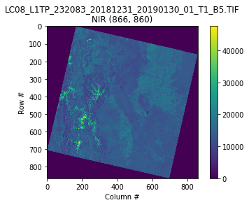

NDVI
Basic work with satellital images with python and google Colab.

The normalized difference vegetation index (NDVI) is a simple
graphical indicator that can be used to analyze remote sensing measurements,
typically, but not necessarily, from a space platform, and assess whether
the target being observed contains live green vegetation or not. Link to Wikipedia
Let's start with the basic processing of satellite images with python.
Basics
 The satellites are equipped with various sensors, of our interest, the multispectral camera. A multispectral image is one that captures image data within specific wavelength ranges across the electromagnetic spectrum. In the image we can see the band 4 (near infrared).
 Satellite images have a special format, they must contain not only the values
for each pixel but also the coordinates among others.
Satellite images have a special format, they must contain not only the values
for each pixel but also the coordinates among others.
To process this image, I use Google Colab, loading Drive into
the file system to facilitate the storage of processed images.
Several libraries are necessary for processing, in this notebook
we review the most basic operations to obtain a box of the original
image like the one we see in the image.
Generate a Dataset from Satellital Images.
This section requires a greater understanding, the purpose is to obtain a CSV file with statistical data (features of the image) for later use in an ML model.
 First we need to generate a polygon about the vineyards that we are going to study.
The coordinates can be generated with jeojson.io as in our case.
First we need to generate a polygon about the vineyards that we are going to study.
The coordinates can be generated with jeojson.io as in our case.
In the notebook we can see how this polygon with Lat and Long
coordinates needs to be projected to the coordinate system that uses the satellite image.
 We can use the polygon to mask the image, then calculate the ndvi.
Later, we can take the pixel information of the ndvi, and build a Data
Frame with all the images that we wont to process.
We can use the polygon to mask the image, then calculate the ndvi.
Later, we can take the pixel information of the ndvi, and build a Data
Frame with all the images that we wont to process.